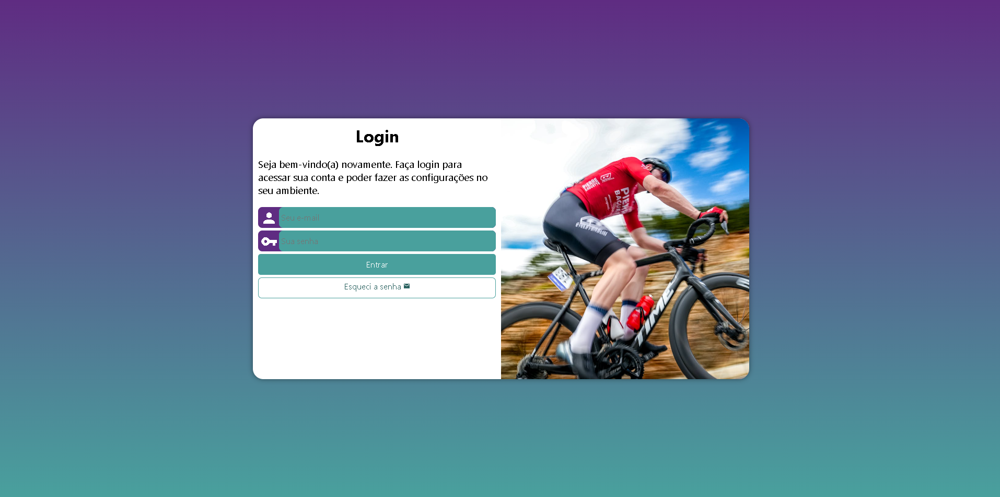
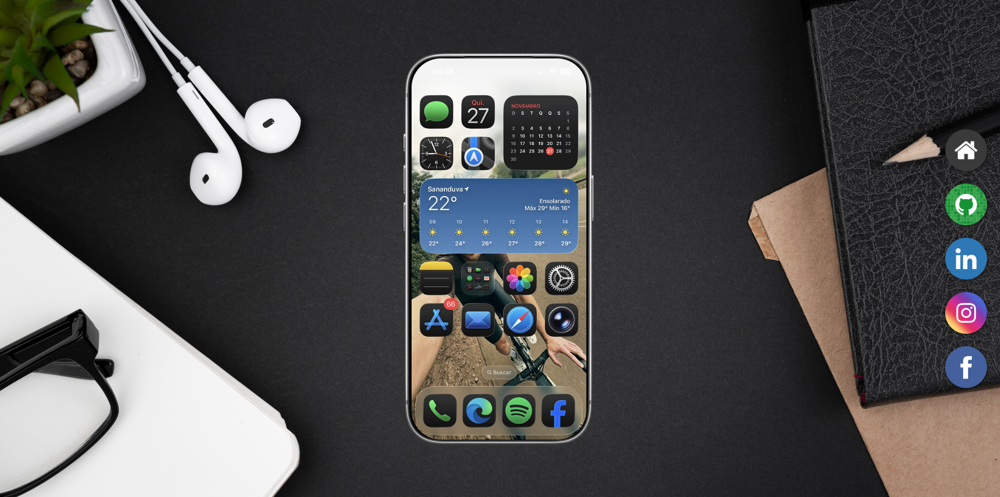

Gustavo Savi
Desenvolvedor Web em Formação | Estudante de Análise e Desenvolvimento de Sistemas. Atualmente estou em transição para a área de Desenvolvimento de Software, focando no tripé fundamental do front-end: HTML, CSS e JavaScript. Enquanto aprofundo minha base de lógica de programação, engenharia de software e estruturas de dados através da graduação em Análise e Desenvolvimento de Sistemas. Minha trajetória profissional começou no setor de educação de trânsito, onde atuei como diretor e gestor, liderando equipes e processos estratégicos. Essa experiência despertou em mim uma paixão por tecnologia e automação, inicialmente aplicada na área de Data Analytics, onde trabalhei com Python, SQL, Pandas, ETL e construção de dashboards. Agora, canalizo essa bagagem analítica e de resolução de problemas para criar aplicações, interfaces e soluções que geram impacto real.
Minhas skills
HTML5
90%
CSS3
60%
JavaScript
35%
Python
50%
Comunicação
90%
Trabalho em equipe
90%
Proatividade/Iniciativa
100%
Pensamento crítico
85%
Formação
2007 - 2012
Universidade de Passo Fundo
Bacharel em Direito
2024 - 2025
TripleTen Brasil
Análise de Dados
2025
Curso em Vídeo
HTML5 e CSS3
2025 - Em andamento
Udemy Academy
JavaScript e TypeScript
2025 - Em andamento
Universidade de Caxias do Sul
Análise e Desenvolvimento de Sistemas
Projetos

2025
Projeto de Vídeos
Projeto construído para treinar a inserção de vídeos em nosso site
Saiba mais...
Primeiro projeto do curso, mostrando a inserção e incorporação de vídeos em sites.

2025
Projeto Cordel
Projeto para mostrar a utilização do efeito parallax
Saiba mais...
Neste projeto utilizamos o efeito parallax, fixando imagens no fundo para que se movam de forma independente do conteúdo à medida que a página é rolada.

2025
Projeto Android
Projeto construído durante o módulo 2 do Curso em Vídeo
Saiba mais...
O objetivo deste projeto foi replicar um site proposto pelo Professor Gustavo Guanabara. Nele utilizamos novas fontes, hyperlinks, ícones e reponsividade com imagens que se adaptam a telas menores.

2025
Projeto Login
Projeto construído para treinar responsividade com Media Query
Saiba mais...
Neste projeto utilizamos a técnica Mobile First e com base nos breakpoints adaptamos o layout para diferentes tamanhos de telas usando Media Query.

2025
Projeto Redes Sociais
Projeto construído durante as aulas do Modulo 04 do Curso em Vídeo
Saiba mais...
Este projeto treinou a centralização de imagem usando o position e o movimento de translação; A remodelação de links com a utilização de hover e transition.